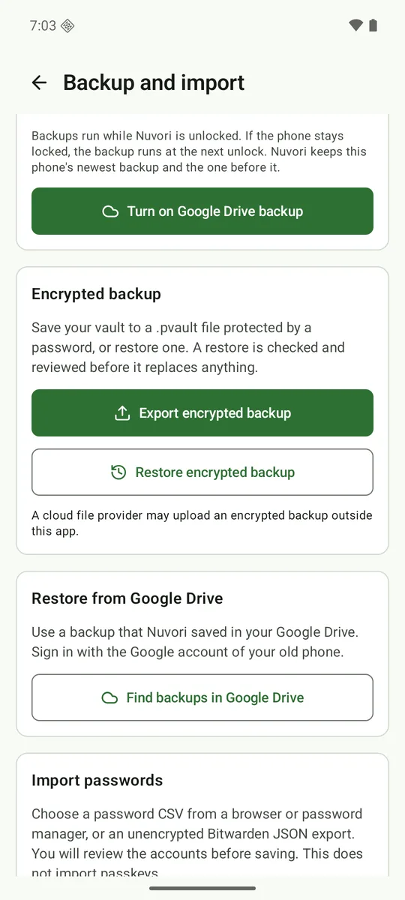

- Nuvori
- Import passwords
Import your passwords from Chrome, Edge, Brave or Firefox
Move your passwords into Nuvori once. After that, every browser you add fills from the same vault, and no browser needs an import again.
- CSV and Bitwarden JSON
- Up to 5,000 logins per file
- You review before saving
How it works
- The import runs in Nuvori for Android. Sync then takes the logins to Nuvori for Windows, and to every browser with the extension.
- Only Windows? Nuvori for Windows imports a KeePass or KeePassXC database (.kdbx). It doesn't read browser CSV files.
- An export file holds every password in plain text. Delete it as soon as the import is done.
1. Export the passwords from your browser
Open the browser's password settings and choose to export your passwords as a file:
| Browser | Where to start |
|---|---|
| Chrome | chrome://password-manager/settings, then Export passwords. |
| Brave | brave://password-manager/settings, then Export passwords. |
| Edge | edge://wallet/passwords, then the export option in its menu. |
| Firefox | about:logins, then Export passwords in the menu. |
Other browsers built on Chromium or Firefox have the same export in their password settings. The button names belong to each browser and can change.
Chrome on Android can export too, from its Password Manager settings. Then the file is already on your phone.
2. Put the file on your phone
If you exported on a PC, copy the file to your phone, for example over a USB cable. Don't send it by email or chat: it holds every password in plain text.
3. Import it in Nuvori for Android
- Open Nuvori and unlock it.
- Open Settings > Backup and import. On Home, Scan or import > Import passwords goes to the same place.
- Under Import passwords, tap Choose password export and pick the file.
- If Nuvori can't tell the columns apart, choose the website, username and password columns.
- Review the accounts, then save them.
- Delete the export file. Then delete the passwords in the browser, so its own suggestions stop.

Which files work
- CSV exports from Chrome, Edge, Brave and other browsers built on Chromium, Firefox, Safari, 1Password, LastPass, Dashlane, Bitwarden and KeePass. Another CSV works if you pick its columns.
- Bitwarden JSON exports that are not encrypted.
- Up to 5,000 logins and 4 million characters per file, in UTF-8.
A password export has no passkeys. To bring passkeys, open Settings > Passkeys on Android and tap Import passkeys from another manager. Android shows the managers that support secure credential transfer.
Authenticator codes come in separately too, from Settings > Import authenticator codes: Google Authenticator's export QR codes, a Zoho OneAuth export, or a text file of otpauth://totp links.
From KeePass on Windows
In Nuvori for Windows, open Settings > Your data > Import from KeePass. Choose the .kdbx file and enter its password, and its key file if it has one. Nuvori shows what the database holds before it imports logins, codes and notes.